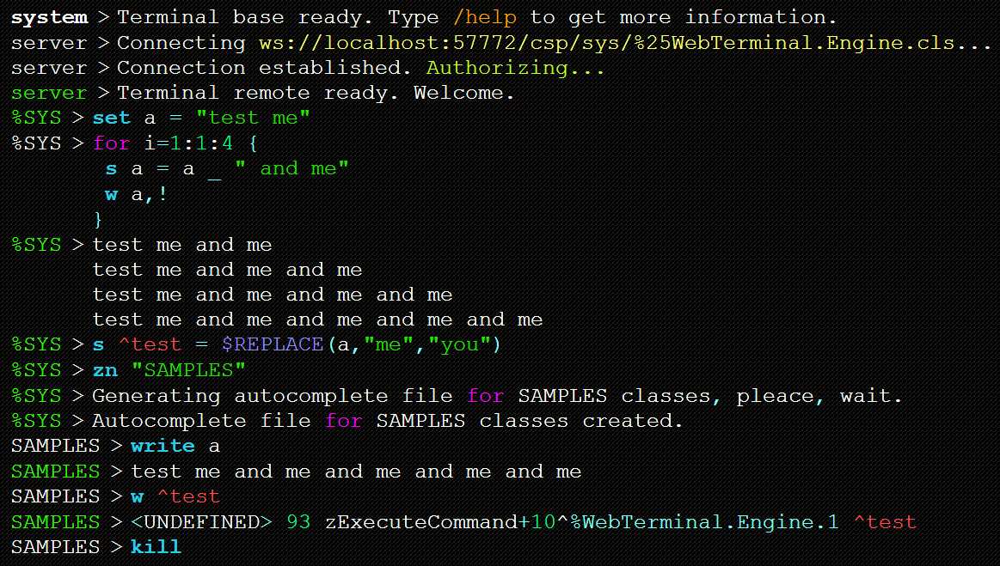
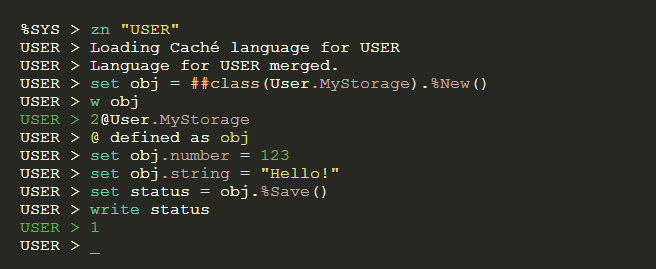
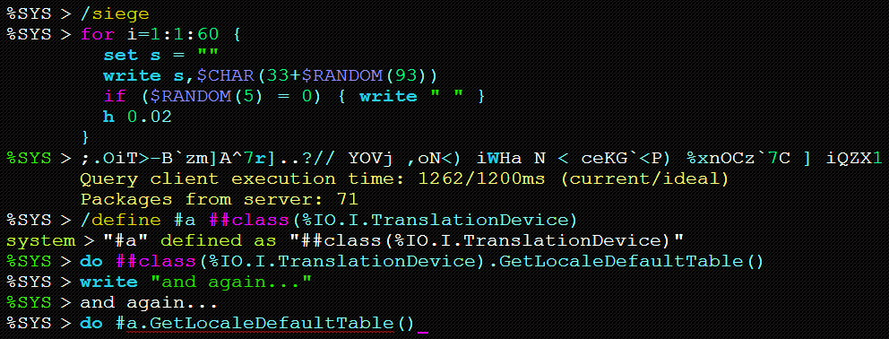
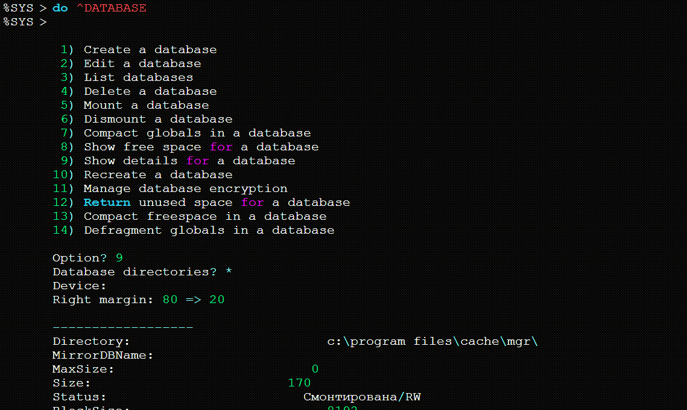
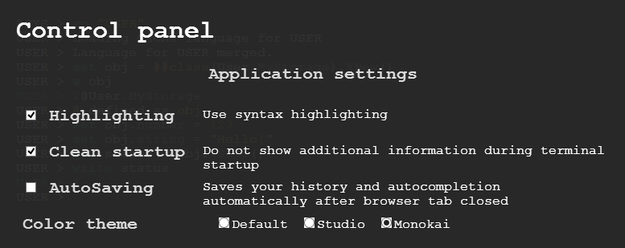
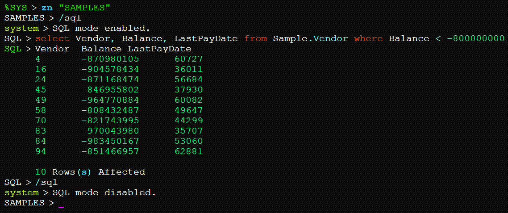
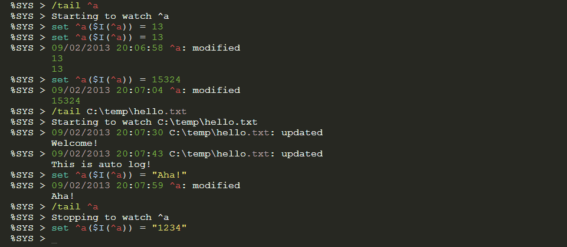
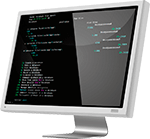
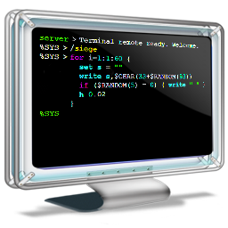

Showcase

Use full Caché syntax and all terminal supported commands. Change namespace, set variables - feel
free as in common terminal!

Choose terminal look you wish. Change themes or make your own, unique theme.

Write any program right on terminal and execute it on server side. Use history to execute command
(or program) again and again. Define any expression you like.

Execute most of system utilities, routines, programs.

Change terminal behaviour using different available settings. Further - more.

Use simple sql-shell to quickly get required data from databases.

Monitor any changes in globals or files by using /tail command
And that's not all! Explore more by using /help command. Find usage of new browser-based
terminal application comfortable.
Downloads
You can download last build from GitHub
anytime you wish. Here you can find only the list of stable builds ready to install. Now
installation represented as single WebTerminal.Engine class and it's web application (right click,
download as):
Installation

Just import xml to %SYS namespace. You can place /csp/ files in other namespace if you want.
Usage
Open imported index.csp file. It must locate near
http://[host]:[port]/csp/[namespace]/webTerminal/index.csp
Make sure that:
- Your Caché version at least 2013.1 (WebSockets support)
- You have write permissions to %CACHELIB
- Nobody can access your index.csp without Caché security
Feedback / contact me
Follow project on GitHub.
We will be glad to hear any wishes, requests, comments and issues. If you have some extra
information or questions - contact me, developer of this application, Nikita.

Welcome to Caché Web Terminal homepage!
We're glad to introduce something new and convenient to Caché. Today it's a completely new terminal
utility in your favourite browser with WebSocket support. Make your database easy-accessible
wherever you are and change your viewpoint about classic gray terminal - future incomes!
This utility will help you to administrate your database and, maybe, will replace standard
terminal utility for you at all. Our target is to develop more than terminal - universal control
utility to ease administrators work and save a couple of time. It will feature a lot of new things,
which are not included in typical terminal application. Are you a system administrator or
just a Caché developer? Ready to change something in work with your favourite database? Try it
right now!
Web terminal has lots of features, just take a look:
- Typical terminal workspace in your browser
- Local and remote access to Caché
- Infinite execution timeout - thanks to WebSockets
- New useful features like class autocompletion, macro recording, etc.
- Totally new design for terminal with code highlighting
- A few not fixed bugs :)
Try it! We are pleasant for any your proposals, bugs and new feature ideas. Visit related pages
to get more information. Thanks!